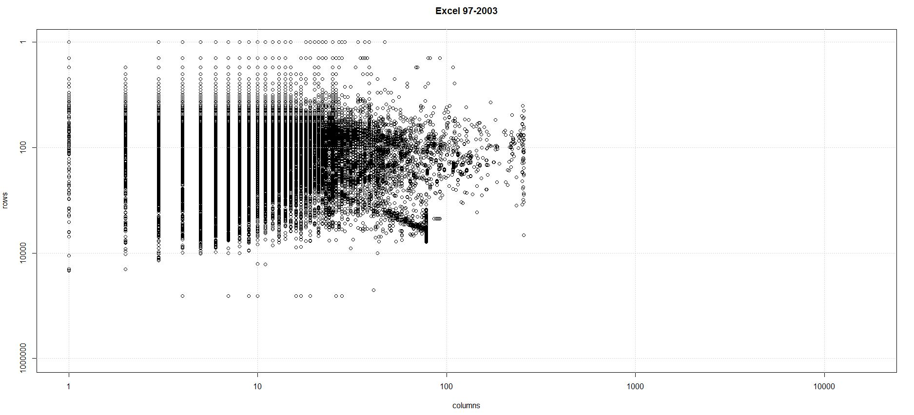
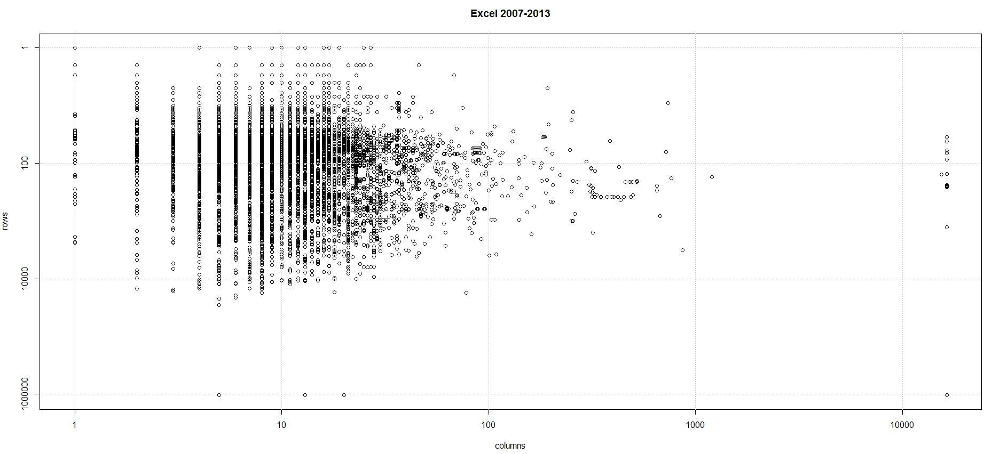
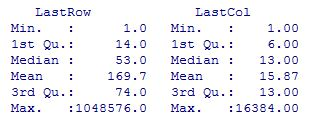
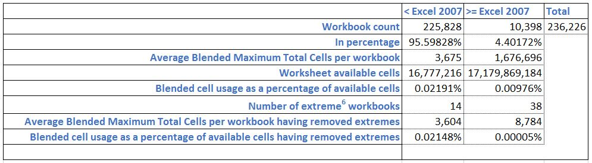
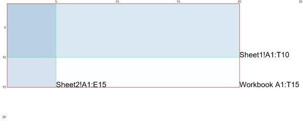

What are all the rows for in Excel?
A look at the FUSE corpus using F#, nodejs, CouchDB and R. Part 1 of n.
Most spreadsheet researchers are familiar with the EUSES Corpus1 (4498 spreadsheets). More recently (thanks to Felienne Hermans and Emerson Murphy-Hill), the Enron Corpus2 (15,770 spreadsheets), came to the attention of the wider community. More recently still, the FUSE corpus3, has made some 249,376 spreadsheets available to everyone. So, I decided to have a look at the use of the grid across all these workbooks.
Summary.
The process I followed succeeded in analysing nearly 95% of the spreadsheets in the corpus. The scatter plots below show the last row and last column produced by the analysis for each of the 236,226 workbooks I was able to analyse completely.
 
The analysis shows concentration of use of the grid is overwhelmingly in the upper left corner (in other words R1C1). This is borne out by the summary statistics as well.

The workbooks break down as follows:

Once extreme workbooks are removed, distinguishing between pre-2007 sheets and the rest shows that generally Excel users are not taking advantage of the extra 983,040 rows nor extra 16,128 columns4. In fact while there has been a more than thousand fold increase in the number of available cells there has only be an approximate doubling in the total number of cells used.
Even including the extreme workbooks the average Excel 2007-2013 workbook in the analysis uses just less than 0.01% of the grid. Looking at it another way, based on 0.01% occupancy rate, if Excel was Las Vegas, there'd only be 15 people staying tonight5.
As practicioners, we know this is true from our own experience. We even advise and prefer parsimonious and organised use of the grid because it generally aids understanding of the workbook. Using the grid for persisting data is contrary to best practice and no higher level function in Excel (non-trivial calculation, pivot, chart, print) involving that many (heterogenous) cells could be sufficiently performant (on a desktop machine) or even be guaranteed to work. So, from the point of view of best practice it's a good thing that, on the whole, users aren't filling the grid.
So why are all the rows there?
They are there for the edge case. So that regardless of the size of your data, the grid will not hinder you. In my view however it hinders the beginner. Any piece of data can go in an effectively limitless number of locations. When teaching I very commonly come across the question: 'where should I put 'X''. The extent of the grid demands organisation. The extent of the grid permits effectively unbounded expansion of a model. How many novice users arrange their spreadsheets in such a way that they can cope with the flexibility the grid permits? Of course, the answer is, very few.
This highlights how important it is to have a methodology when developing/ using spreadsheets. If you are in the financial sector, traditionally heavy users of Excel, then there are a number of organisations like Operis, Corality and F1F9 who offer training and even valuable free advice on best practice use of Excel. But there is nothing to stop you or your organisation developing your own methodology, especially if a 'balance sheet style' doesn't suit your domain. It can start simply with something like: every cell with a number must be accompanied by a row header or column header explicitly stating the units of measure, and evolve from there. Getting a consistent approach to spreadsheet development/ use across your organisation will be worth the effort.
Separately, I've written other posts about a novice mode in Excel and I'd like to add to that in this post. I think the novice mode should include the following:
- grey out anything below and to the right of the viewport (anchored at cell A1), to discourage (but not prevent) putting data there
- 'garbage collect' (recursively) the furthest unused cells below and to the right of the viewport. Garbage collection would mean if a cell contains no data, no formulas, is not part of a named range and is not in a print area then it should be greyed out and excluded from the
Worksheet.UsedRange. The used range must always be rectangular however, a jagged range is not permitted.
I plan to continue analysis of the FUSE corpus with a focus on identifying aspects of spreadsheet use that could be improved to make life easier for Excel beginners. So expect more posts on the idea of a novice mode and ways in which constraining the product can actually make it easier to use for most people. I'd really appreciate any comments you'd like to share.
The remainder of this post outlines the steps I took to perform the analysis.
Method
If you'd like to follow along with the method, I am referencing the information in this link: static.barik.net/fuse/.
This analysis was performed on the current Fuse set which at the time of writing was 249,376 binaries extracted from the Common Crawl files from Winter 2013 through December 2014. Fuse is a dynamic archive hence why I'm recording this fact.
236,226 workbooks were successfully analyzed. In order to perform this analysis I took the following steps:
- Downloaded the JSON metadata file (fuse-bin.analysis.dedup.poi-dec2014.json.gz)
- Decompressed the file with 7-zip and used nodejs to read it into a CouchDB instance. MongoDB is suggested and commands are provided to load it in to a MongoDB instance but it's not my cup of tea. CouchDB worked fine in any case, although because I was doing it on my laptop I had to split the file and batch the inserts to get it to work.
- FUSE does provide POI stats in the JSON, but a MapReduce on
doc.POI['countCOLUMNS'],doc.POI['countCOLUMN'],doc.POI['countROW']anddoc.POI['countROWS']seemed to show the majority of these counts at zero, so I decided to roll my own. - Conveniently FUSE provides all 249,376 binaries and an index on their site so I downloaded the index file (fuse-all.sha1.sorted-dec2014.txt) and the archive (fuse-binaries-dec2014.tar.gz).
- Decompressed the archive using 7-zip. It is 21.3GB fully expanded.
- I then iterated through the collection using F# and COM Interop to discover the last non-empty row and last non-empty column on each worksheet in each workbook. Then per workbook I took the maximum last used row from all sheets in the book and separately the maximum last used column from all sheets to produce a blended maximum used range for the workbook. In other words, using the example below, if the maximum used range in Sheet1 was A1:T10 and the maximum used range in Sheet2 was A1:E15 the workbook maximum used range was A1:T15.

An aside here. There are plenty of other technologies available to read spreadsheets and I looked at and dismissed the following: Gembox (because the free version only lets you read 150 rows per sheet and 5 sheets per workbook), ExcelProvider (because it looks at the file extension to determine whether to open a binary stream or an xml stream and the FUSE file names don't have file extensions), NPOI (this is the .NET port of POI so it was appealing to use similar technology to the FUSE guys but I just didn't grok it immediately so maybe I'll come back to it) and ExcelDataReader (I did a partial implementation using this but there ended up being a lot of files it couldn't open, the crux of the issue being not having a good way to determine whether to open a binary stream - for xls - or an xml stream - for xlsx). So I settled on Office.Interop. Which, is not without its own issues - especially around tightly managing your RCW references (here's a good stackoverflow post on the subject) - but FUSE notes some 28,616 workbooks unreadable by their analysis tools as opposed to my 13,150. Many of the COM errors came from password protected workbooks and the sudden death of the RPC server, which I couldn't get to the bottom of. One further point worth noting is that COM introduces a dependency on Windows which restricts your VM options if you are pushing this analysis up into the cloud. A definite next step for me so whether or not I continue with COM will remain to be seen.
- The technique I used for finding the last used column was:
let cellsColl = sheet.Cells
let firstCell = cellsColl.[1,1] :?> Range
let mutable lastCell = cellsColl.[1,1] :?> Range
let mutable lastCol = -1
try
try
lastCell <- cellsColl.Find("*", firstCell, Excel.XlFindLookIn.xlFormulas, Excel.XlLookAt.xlPart, Excel.XlSearchOrder.xlByColumns, Excel.XlSearchDirection.xlPrevious, Type.Missing, Type.Missing, Type.Missing)
if(not(obj.ReferenceEquals(lastCol, null))) then lastCol <- lastCell.Column
with
| _ as ex -> printfn "%s has thrown an error: %s" sheet.Name ex.Message
finally
// clean up com references
Then change Excel.XlSearchOrder to Excel.XlSearchOrder.xlByRows to find the last used row. I have assumed content in all sheets starts in cell A1 rather than attempt to resolve the upper left corner of the used range aswell as the bottom right. I think this is a reasonable assumption.
- Having got the results I then used nodejs to update the JSON records in CouchDB. Once again due to the resource constraints on my machine this operation needed to be batched.
- Finally I wrote another MapReduce to get the results back out in csv and loaded this content in to R.
- I split the data in to pre and post Excel 2007 groups then produced the scatter plots for the last row vs the last column. I used the same log scales for both pre and post Excel 2007 to highlight the similarity in the distributions.
In terms of improving the method it's worth noting that COM is not fast. It also introduces a dependency on Windows and Excel. Also, the programming is just plain ugly. To remove the need for COM a reliable method for determining whether the file is a binary file or xml file would need to be developed and then the ExcelDataReader could be used. NPOI is also worth further investigation. I will look at these two technologies next before pushing the analysis up in to the cloud.
Please comment if you've got any questions I can help with.
Have fun!
Footnotes:
Marc Fisher II and Gregg Rothermel. The EUSES Spreadsheet Corpus: A shared resource for supporting experimentation with spreadsheet dependability mechanisms. In Proceedings of the 1st Workshop on End-User Software Engineering, pages 47-51, St. Louis, MO, USA, May 2005 ↩
Felienne Hermans and Emerson Murphy-Hill. Enron's Spreadsheets and Related Emails: A Dataset and Analysis. 37th International Conference on Software Engineering, ICSE 2015 ↩
Titus Barik, Kevin Lubick, Justin Smith, John Slankas, and Emerson Murphy-Hill. "Fuse: A Reproducible, Extendable, Internet-scale Corpus of Spreadsheets." In: Proceedings of the 12th Working Conference on Mining Software Repositories (Data Showcase), Florence, Italy, 2015. ↩
In section V of the FUSE paper a limitation of the Common Crawl which means it can only store binary files no greater than 1MB is highlighted so I'm aware that this analysis excludes really big Excel files and that they could conceivably skew the grid usage down and to the right. But the paper goes on to state that such files only make up low single digit percentages in the other available corpora so my contention is that it wouldn't make a very big difference to this analysis. ↩
150,544 rooms as at 03/2015 according to the Las Vegas Convention and Visitor Authority ↩
An extreme workbook is defined as one where data is reported either in row 1,048,576 or column 16,384. These are removed from the workbook summary only for the purpose of calculating the blended average cell usage. They remain in the scatter plots and statistical analysis. ↩